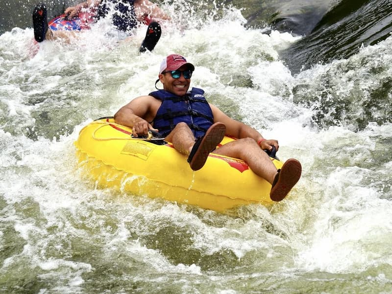

You should really try it!

Floating down a river in a river tube is a great way to cool off on a hot summer day! Go with the flow of the water and ride your tube down the river while taking in the beautiful scenery of trees, shrubbery and flowers and scenic river boulders. River tubing is ideal in the months of May through September. Put your lifejacket and helmet on and slide your tube into the river and enjoy a leisurely float or some exciting rapids.